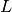
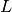

statsmodels.tsa.arima_model.ARMA¶
-
class
statsmodels.tsa.arima_model.ARMA(endog, order, exog=None, dates=None, freq=None, missing='none')[source]¶ Autoregressive Moving Average ARMA(p,q) Model
Parameters: endog : array-like
The endogenous variable.
order : iterable
The (p,q) order of the model for the number of AR parameters, differences, and MA parameters to use.
exog : array-like, optional
An optional arry of exogenous variables. This should not include a constant or trend. You can specify this in the fit method.
dates : array-like of datetime, optional
An array-like object of datetime objects. If a pandas object is given for endog or exog, it is assumed to have a DateIndex.
freq : str, optional
The frequency of the time-series. A Pandas offset or ‘B’, ‘D’, ‘W’, ‘M’, ‘A’, or ‘Q’. This is optional if dates are given.
Notes
If exogenous variables are given, then the model that is fit is
where
 and are polynomials in the lag
operator, . This is the regression model with ARMA errors,
or ARMAX model. This specification is used, whether or not the model
is fit using conditional sum of square or maximum-likelihood, using
the method argument in
and are polynomials in the lag
operator, . This is the regression model with ARMA errors,
or ARMAX model. This specification is used, whether or not the model
is fit using conditional sum of square or maximum-likelihood, using
the method argument in
statsmodels.tsa.arima_model.ARMA.fit. Therefore, for now, css and mle refer to estimation methods only. This may change for the case of the css model in future versions.Methods
fit([start_params, trend, method, ...])Fits ARMA(p,q) model using exact maximum likelihood via Kalman filter. geterrors(params)Get the errors of the ARMA process. hessian(params)Compute the Hessian at params, loglike(params[, set_sigma2])Compute the log-likelihood for ARMA(p,q) model loglike_css(params[, set_sigma2])Conditional Sum of Squares likelihood function. loglike_kalman(params[, set_sigma2])Compute exact loglikelihood for ARMA(p,q) model by the Kalman Filter. predict(params[, start, end, exog, dynamic])ARMA model in-sample and out-of-sample prediction score(params)Compute the score function at params. Attributes
endog_namesexog_names